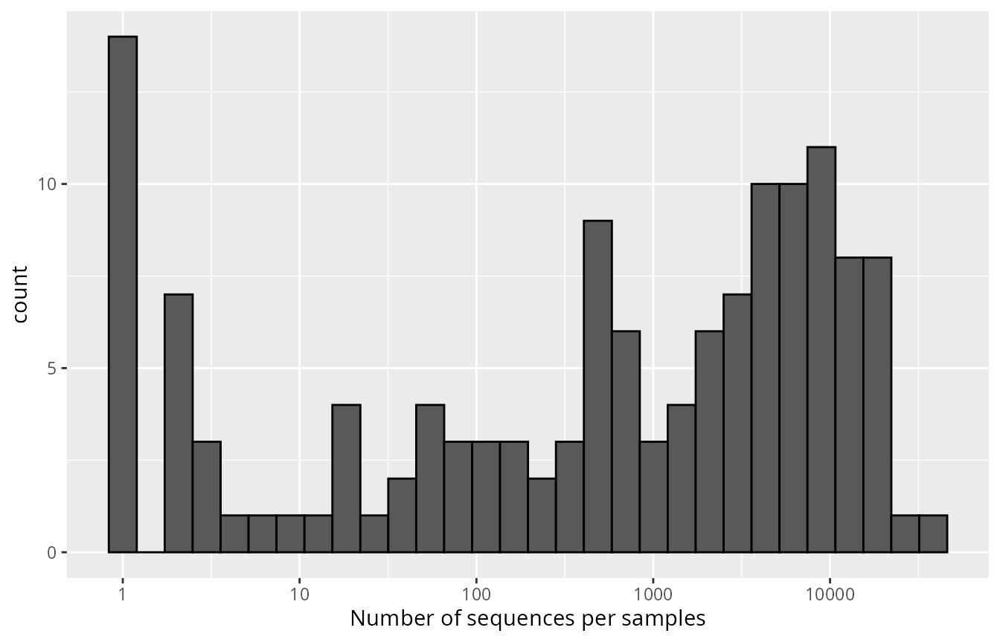
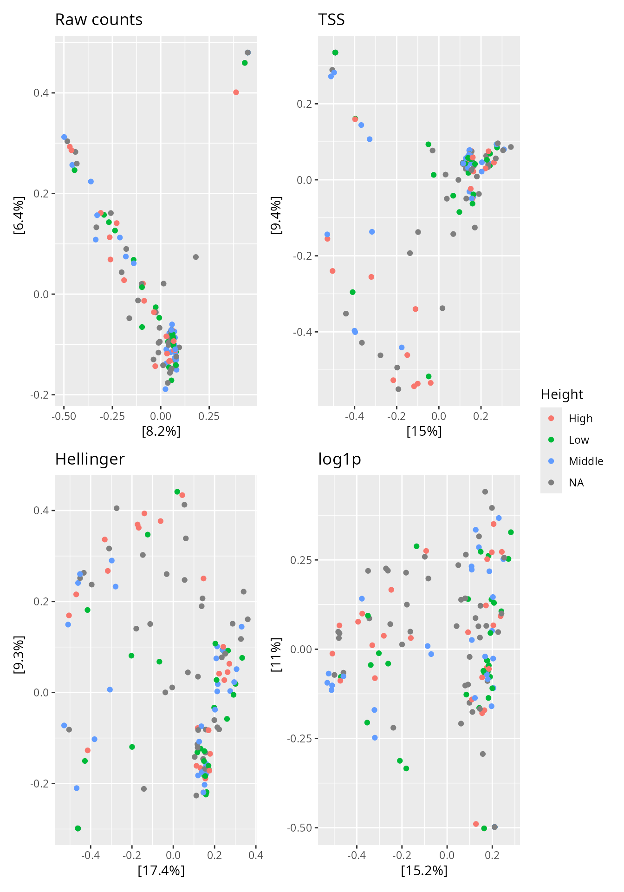

Transformation and normalisation of phyloseq objects
Source:vignettes/articles/normalization.Rmd
normalization.Rmd
library(MiscMetabar)
data(data_fungi_mini)Choosing how to normalise or transform a count table is one of the most consequential (and discussed) decisions in metabarcoding analysis. Unequal sequencing depths across samples introduce a systematic bias that can distort every downstream step — alpha diversity, ordination, differential abundance testing. Yet every normalisation method makes its own assumptions and trade-offs (McMurdie and Holmes 2014).
This article surveys the methods available in
MiscMetabar, shows their effect on
data_fungi_mini, and offers a decision guide to help you
pick the right approach.
Why does it matter?
Amplicon sequencing returns compositional data: only the relative proportions of taxa are observed, not their absolute abundances (Gloor et al. 2017; Quinn et al. 2018). On top of that, libraries differ in total read count by one to two orders of magnitude, even within the same experiment. Applying diversity or ordination methods to raw counts therefore conflates biological signal with technical depth variation.
ggplot(data=tibble(x=sample_sums(data_fungi_mini)),aes(x=x)) + geom_histogram(color="black") + scale_x_log10() + labs(x="Number of sequences per samples")
Large variation in sequencing depth across samples in ‘data_fungi_mini’.
Overview of methods
| Family | Function | Key property |
|---|---|---|
| Presence/absence | as_binary_otu_table() |
Ignores abundance entirely |
| Proportions (TSS) | transform_pq(method="tss") |
Divides by library size |
| TSS + log | normalize_prop_pq() |
TSS × constant, then log |
| Hellinger | transform_pq(method="hellinger") |
Square-root of proportions |
| Centred log-ratio | transform_pq(method="clr") |
Compositionally coherent |
| Robust CLR | transform_pq(method="rclr") |
CLR robust to zeros |
| Log(1+x) | transform_pq(method="log1p") |
Simple variance stabilisation |
| Z-score | transform_pq(method="z") |
Per-taxon standardisation |
| Rank | transform_pq(method="rank") |
Non-parametric, outlier robust |
| Rarefaction | rarefy_pq() |
Subsampling to equal depth |
| SRS | srs_pq() |
Rank-preserving subsampling (Heidrich et al. 2021) |
| GMPR | gmpr_pq() |
Pairwise ratio geometric mean (Chen et al. 2018) |
| CSS | css_pq() |
Cumulative sum scaling (Paulson et al. 2013) |
| TMM | tmm_pq() |
Trimmed mean of M-values (Robinson and Oshlack 2010) |
| VST | vst_pq() |
Variance-stabilising (DESeq2) (Love, Huber, and Anders 2014) |
| Depth residuals | mcknight_residuals_pq() |
Log-log regression residuals (McKnight et al. 2019) |
Exploring the transformations
transform_pq() — a unified interface via
vegan::decostand
transform_pq() wraps vegan::decostand() and
handles the taxa_are_rows orientation automatically.
data_tss <- transform_pq(data_fungi_mini, method = "tss")
data_hell <- transform_pq(data_fungi_mini, method = "hellinger")
data_clr <- transform_pq(data_fungi_mini, method = "clr") # pseudocount = 1 by default
data_log1p <- transform_pq(data_fungi_mini, method = "log1p")
# Sample sums after TSS: all 1
round(range(sample_sums(data_tss)), 4)
#> [1] 1 1Hellinger and CLR are particularly recommended for ordination (Legendre and Gallagher 2001; Gloor et al. 2017). Hellinger distance on the transformed table equals the Hellinger distance without transformation, which behaves better than Bray-Curtis on sparse data. CLR makes the data compositionally coherent but requires replacing zeros (vegan uses a pseudocount internally).
normalize_prop_pq() — TSS with log scaling (McKnight
2019)
Multiplies relative abundances by a constant (default 10 000) then applies a log transformation. This is the “rarefaction-free” normalisation proposed by McKnight et al. (2019).
data_norm <- normalize_prop_pq(data_fungi_mini)
# All sample sums are equal after log transform
round(range(sample_sums(data_norm)), 2)
#> [1] 13.29 78.11
rarefy_pq() — rarefaction with optional averaging
Rarefaction subsamples all libraries to the same depth, discarding
reads. It remains the most widely used method despite debates about data
loss (McMurdie and Holmes 2014; McKnight et al.
2019). rarefy_pq() allows averaging over
n random subsamplings to reduce stochasticity.
data_rar1 <- rarefy_pq(data_fungi_mini, seed = 1)
data_rar10 <- rarefy_pq(data_fungi_mini, n = 10, seed = 1)
# Single rarefaction: all depths equal
unique(sample_sums(data_rar1))
#> [1] 1
# Averaged: sample sums close but not integer
round(range(sample_sums(data_rar10)), 1)
#> [1] 1 1
srs_pq() — Scaling with Ranked Subsampling
SRS (Heidrich et al. 2021) scales to a common library size while preserving the rank order of OTU abundances, avoiding the randomness of rarefaction and the data loss associated with it.
data_srs <- srs_pq(data_fungi_mini)
round(range(sample_sums(data_srs)), 0)
#> [1] 1 1
gmpr_pq() — Geometric Mean of Pairwise Ratios
GMPR (Chen et al. 2018) estimates size factors from the geometric mean of median pairwise ratios between samples, making it robust to the high proportion of zeros in microbial OTU tables.
data_gmpr <- gmpr_pq(data_fungi_mini)
round(range(sample_sums(data_gmpr)), 0)
#> [1] 1 61091
css_pq() — Cumulative Sum Scaling
CSS (Paulson et al. 2013) normalises each sample by the cumulative sum of counts up to a data-driven percentile, rather than the total. It is less sensitive to a few very abundant OTUs.
data_css <- css_pq(data_fungi_mini)
tmm_pq() — Trimmed Mean of M-values
TMM (Robinson and Oshlack 2010), borrowed from RNA-seq, computes library-specific normalisation factors by trimming the distribution of log-fold changes between each sample and a reference.
data_tmm <- tmm_pq(data_fungi_mini)
vst_pq() — Variance Stabilising Transformation
VST (Love, Huber, and Anders 2014) fits a negative-binomial model to stabilise the mean-variance relationship, making counts more suitable for methods that assume homoscedastic data.
data_vst <- vst_pq(data_fungi_mini)
mcknight_residuals_pq() — depth-robust alpha
diversity
Instead of normalising the count table, this function computes
residuals from a regression of log-richness on log-depth and stores them
in sample_data. The residuals represent richness corrected
for depth variation — a depth-robust alpha diversity metric proposed by
McKnight et al. (2019) and used in
large-scale soil fungal surveys (Mikryukov et al.
2023).
data_res <- mcknight_residuals_pq(data_fungi_mini)
head(sample_data(data_res)$mcknight_residuals)
#> [1] 0.3273090 -0.1430749 0.5681529 0.7310108 -0.7698491 0.4374109Comparing methods via ordination
A PCoA on Bray-Curtis dissimilarity illustrates how strongly the choice of normalisation shapes the ordination landscape.
ord_raw <- phyloseq::ordinate(data_fungi_mini, method = "PCoA", distance = "bray")
ord_tss <- phyloseq::ordinate(data_tss, method = "PCoA", distance = "bray")
ord_hell <- phyloseq::ordinate(data_hell, method = "PCoA", distance = "bray")
ord_log1p <- phyloseq::ordinate(data_log1p, method = "PCoA", distance = "bray")
p_raw <- phyloseq::plot_ordination(
data_fungi_mini, ord_raw, color = "Height"
) + ggplot2::ggtitle("Raw counts")
p_tss <- phyloseq::plot_ordination(
data_tss, ord_tss, color = "Height"
) + ggplot2::ggtitle("TSS")
p_hell <- phyloseq::plot_ordination(
data_hell, ord_hell, color = "Height"
) + ggplot2::ggtitle("Hellinger")
p_log1p <- phyloseq::plot_ordination(
data_log1p, ord_log1p, color = "Height"
) + ggplot2::ggtitle("log1p")
patchwork::wrap_plots(p_raw, p_tss, p_hell, p_log1p, ncol = 2) +
patchwork::plot_layout(guides = "collect")
PCoA (Bray-Curtis) on raw counts, TSS, Hellinger, and log1p-transformed data. Colour encodes the ‘Height’ variable.
Model-level depth correction (no table transformation)
Some MiscMetabar functions correct for sequencing depth without transforming the OTU table, by incorporating library size directly into the statistical model. These are complementary to — not replacements for — the table-level normalisations above. If you transform the table, you should not use these model-level corrections (set correction_for_sample_size = FALSE).
adonis_pq() — PERMANOVA with library-size
covariate
When correction_for_sample_size = TRUE,
adonis_pq() prepends sample_size
(i.e. sample_sums(physeq)) to the PERMANOVA formula, as
recommended by Weiss et al. (2017):
sample_size + Biological_Effect ~ distance_matrixLibrary-size variation is partitioned out as the first term, so the remaining variance attributed to the biological factor is not confounded by depth. The raw count table is used as-is; only the formula changes.
hill_pq() / hill_tuckey_pq() — alpha
diversity with sqrt-depth residuals
When correction_for_sample_size = TRUE (the default),
these functions:
- Compute Hill numbers from the raw OTU table.
- Fit
lm(hill_values ~ sqrt(read_numbers))per diversity order. - Use the residuals as the response in Tukey ANOVA.
The square-root of read count linearises the typical depth–richness relationship; the residuals represent diversity corrected for depth without discarding any data. Note that the Hill-number values displayed are always computed from raw counts — only the statistical test uses residuals.
This is conceptually similar to mcknight_residuals_pq()
but integrated into the plotting workflow rather than stored as a new
column in sam_data.